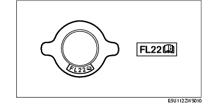
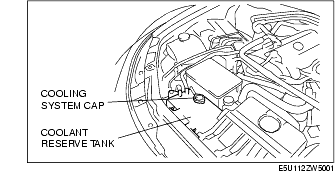
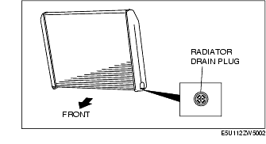

Workshop Manual ➭ ENGINE ➭ COOLING SYSTEM[L8, LF] ➭ ENGINE COOLANT REPLACEMENT [L8, LF]
ENGINE COOLANT REPLACEMENT [L8, LF]
id0112b4800600
{: #wp1059779}
Warning
• Never remove the cooling system cap or loosen the radiator drain plug while the engine is running, or when the engine and radiator are hot. Scalding engine coolant and steam may shoot out and cause serious injury. It may also damage the engine and cooling system. {: #wp1060794}• Turn off the engine and wait until it is cool. Even then, be very careful when removing the cap. Wrap a thick cloth around it and slowly turn it counterclockwise to the first stop. Step back while the pressure escapes. {: #wp1059797}• When you are sure all the pressure is gone, press down on the cap using the cloth, turn it, and remove it.
Caution
• Use engine coolant at a concentration that meets the environmental conditions in which the vehicle is driven, otherwise engine damage could occur. {: #wp1060795}• The engine has aluminum parts and must be protected by an ethylene-glycol-based coolant to prevent corrosion and freezing. {: #wp1059835}• Do not use coolants containing Alcohol, Methanol, Borate or Silicate. These coolants could damage the cooling system. {: #wp1059847}• Use only soft (demineralized) water in the coolant mixture. Water that contains minerals will cut down on the coolant's effectiveness. {: #wp1059857}• Engine coolant damages paint. If engine coolant does get on a painted surface, rinse it off quickly.
*Note*{: #wp1059879}
• If the "FL22" mark is shown on or near the cooling system cap, use FL22 type engine coolant.
{: #wp1060796}• FL22 type engine coolant is shipped as a diluted solution (55% coolant, 45% water). Use the solution as is when replacing coolant.

Engine coolant capacity (approx. quantity)7.5 L {7.9 US qt, 6.6 Imp qt}
- Remove the cooling system cap.{: #wp1059959}

- Remove the radiator drain plug and drain the engine coolant into a container.{: #wp1059986}

-
Flush the cooling system with water until all traces of color are gone.
-
Let the system drain completely.
-
Tighten the radiator drain plug.
Tightening torque0.8-1.5 N·m {8-15 kgf·cm, 7-13 in·lbf}
- Referring to the following chart, select the correct volume percentage of the water and coolant.
Antifreeze solution mixture percentage (Except FL22 type engine coolant)
|
Engine coolant protection {: #wp1060224} |
Volume percentage (%) {: #wp1060226} |
Gravity at 20 °C {68 °F} {: #wp1060230} |
||
|---|---|---|---|---|
|
Water {: #wp1060342} |
Coolant {: #wp1060345} |
|||
|
Above -16 °C {3 °F} {: #wp1060094} |
65 {: #wp1060096} |
35 {: #wp1060152} |
1.057 {: #wp1060155} |
|
|
Above -26 °C {-15 °F} {: #wp1060259} |
55 {: #wp1060262} |
45 {: #wp1060265} |
1.072 {: #wp1060268} |
|
|
Above -40 °C {-40 °F} {: #wp1060275} |
45 {: #wp1060278} |
55 {: #wp1060281} |
1.086 {: #wp1060284} |
|
-
Refill the coolant into the coolant reserve tank up to the F mark on the tank.
-
Install the cooling system cap.
Caution
• If the water temperature gauge rises too high, stop the engine and decrease the water temperature to prevent overheating. Then, verify the malfunctioning part and repair or replace it. {: #wp1060797}• If the engine coolant level in the coolant reserve tank is below the L mark during engine coolant air bleeding operation, stop the engine, and after the engine coolant temperature decreases, add engine coolant. Then, resume the engine coolant air bleeding operation.
- Start the engine and warm up the engine by idling.
*Note*{: #wp1060533}
• If the accelerator pedal is depressed continuously for a specified time, the engine speed may decrease to the idle speed. This is due to the fuel cut control operation, which prevents overheating, and it does not indicate a malfunction.
- After the engine warms up, perform the following steps. At this time, be careful of the coolant temperature to prevent overheating.
(1) Run the engine at approx. 2,500 rpm for 5 min. {: #wp1060591}(2) Run the engine at approx. 3,000 rpm for 5 s, then idle. {: #wp1060627}(3) Repeat step (2) 4-5 times.
-
Stop the engine, and inspect the coolant level after the coolant temperature decreases. If it is low, repeat steps 7-10.
-
Inspect for engine coolant leakage. (See ENGINE COOLANT LEAKAGE INSPECTION [L8, LF].)